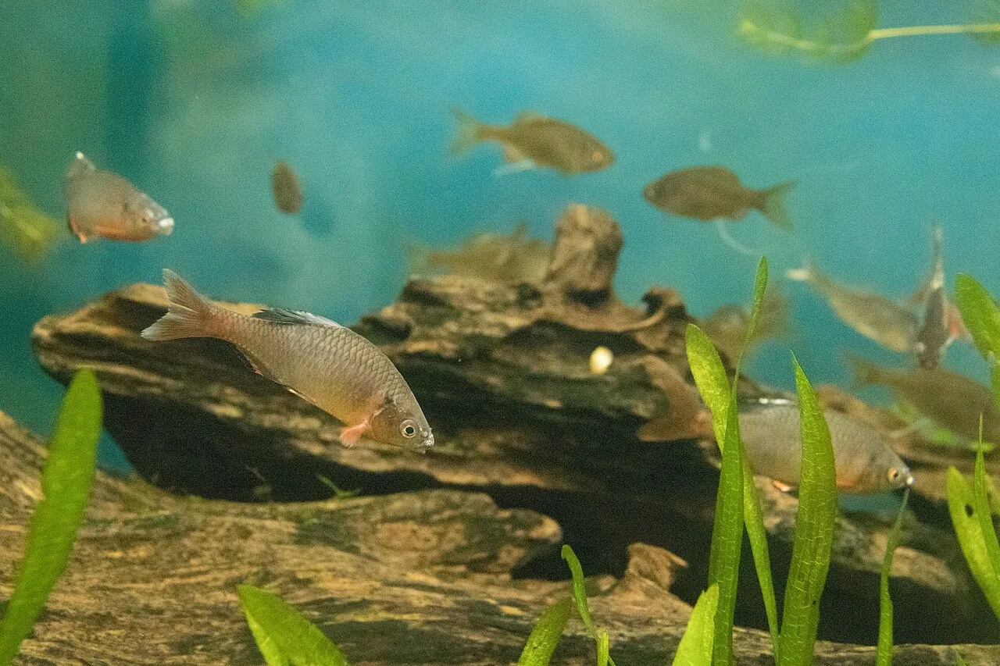
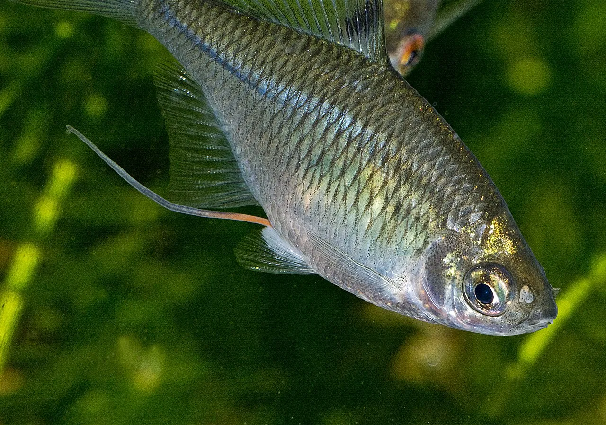

Tanago: the fish that lays its eggs inside a living mussel
If you have heard of tanago (タナゴ) in English, it is almost certainly through micro-fishing. They are the tiny bitterlings that Japanese anglers pursue with hand-built bamboo rods and hooks barely visible to the eye, competing to land a fish small enough to sit inside a one-yen coin. That is a real and lovely tradition. It is also about a tenth of the story. What the angling literature rarely mentions is what these fish do in spring: the female grows a tube as long as her own body and posts her eggs, one or two at a time, into the gill chamber of a living freshwater mussel, where the young will stay for weeks or months before swimming out. Japan has sixteen native tanago taxa. Every single one is now on a national or prefectural red list — and the reason is largely that the mussels are going first.

The spawning, in detail
The defining trait of the bitterling subfamily is the female's ovipositor (産卵管, sanrankan), and the numbers for the Miyako bitterling are worth stating precisely, because they are hard to believe otherwise.
| State | Ovipositor length |
|---|---|
| Outside the breeding season | 1–3 mm |
| During the breeding season | 5–10 mm |
| On the day she spawns | 30–40 mm — reaching the tip of her own tail fin |
The adult fish is itself only 30–40 mm long. On spawning day, the tube is as long as the animal.
The act is quick and surgical. The female positions herself over a freshwater mussel and inserts the ovipositor into the mussel's exhalant siphon — the outflow — placing eggs into the mantle cavity, among the gills. The male then releases sperm near the inhalant siphon, and the mussel's own feeding current draws it inside, where fertilisation happens. The mussel is doing the work of moving the gametes without any say in the matter.
What follows depends on the season the species has chosen.
| Strategy | Species | Time inside the mussel |
|---|---|---|
| Spring–summer spawners | Miyako bitterling and most others | Hatching in about 48 hours at 23°C, or 67–73 hours at 19.5°C; the young then leave roughly 20–30 days after hatching |
| Autumn spawners | Kanehira, Zenitanago, Itasenpara | Spawn around October, larvae overwinter inside the mussel and emerge in spring — roughly six months as a lodger |
Sit with the autumn strategy for a moment. A fish spawns in October and its offspring spend the entire Japanese winter inside another living animal, developing slowly in the dark, and swim out in spring. If that mussel dies in January, the whole clutch dies with it.
Not a friendship
It is tempting to file this under mutualism — the tidy story where both partners gain. The experimental evidence says otherwise, and the honest answer is more interesting.
Work led by Martin Reichard on European bitterlings found that bitterling embryos in a mussel's gill chamber reduce the mussel's growth rate and fecundity, competing with it for oxygen and nutrients. The mussel gains nothing. Where the two have coexisted for a long time, mussels have evolved defences — ejecting the eggs — while in areas the fish reached recently, those defences are absent. That is the signature of an antagonistic relationship, not a partnership.
The clinching detail is an asymmetry in the Japanese data. Freshwater mussels have their own parasitic stage: their larvae, called glochidia, must attach to a fish's gills or fins and live embedded in its tissue before dropping off as juveniles. So mussels do parasitise fish — just not these fish. The documented glochidia hosts for the very mussels that Miyako bitterlings use are other species: oikawa, kawamutsu, gobies, loach. The bitterling uses the mussel's body and does not repay it by carrying its young.
Japanese popular writing often calls this commensalism. Recent literature increasingly frames bitterling–mussel systems as parasitism, or as a reciprocal host–parasite relationship where each lineage exploits the other in different contexts. Japan's own conservation documents tend to describe both life cycles side by side without labelling the relationship at all. We follow the experimental work: this is exploitation, not partnership — while noting the label is genuinely contested.
Why losing the mussels causes hybrids
Freshwater mussels are in serious trouble in Japan. Of the 17 native unionid species, 13 are on the Environment Ministry's red list. They lived mostly in irrigation ponds and farm channels rather than big rivers, and land consolidation, channel concreting and water pollution took those habitats out.
Now follow the consequence, because this is the most elegant and most alarming finding in the field. A study by Hata, Uemura and Ouchi, published in Freshwater Biology in 2020, worked in small rivers on the Matsuyama plain in Ehime. Two bitterlings live there: the native yaritanago and the aburabote, which is native to Japan but not to that river system — it was moved there by people.
As mussel density falls, the surviving mussels become crowded spawning sites. Both fish species pile onto the same few animals, and mixed-species clutches form inside them. Genotyping eggs and larvae showed hybrid clutches at every site, and most frequent where mussel density was lowest. The introduced species is more numerous and breeds for longer, so it produces more offspring.
Losing the mussels does not merely reduce how many fish can breed. It forces different species to breed in the same container, and genetically erases one of them. In the same region, researchers recorded up to 220 bitterling eggs inside a single mussel — a measure of just how crowded a scarce mussel becomes.
The Miyako bitterling, and the law
The Miyako bitterling — miyakotanago — is the emblem of all this. It was described in 1909 from fish in a pond in the botanical garden at Koishikawa, Tokyo. It is endemic to Japan, restricted to the Kanto region, and it is now extinct in Tokyo and Gunma and extinct in the wild in Saitama and Kanagawa. In Chiba it survives in four municipalities, all in agricultural channels, with populations estimated at anywhere from a few dozen to under a thousand individuals.
You will see this fish as both Tanakia tanago and Pseudorhodeus tanago. Molecular work by Chang and colleagues in 2014 proposed the genus Pseudorhodeus, which FishBase and English Wikipedia follow. Japan's Environment Ministry, its red list and Chiba Prefecture's recovery plan continue to use Tanakia tanago — Chiba's plan says so explicitly and explains that it is following the national designations. Neither is an error; they are different conventions.
Its legal protection is unusually heavy. It was designated a national natural monument in 1974 under the Cultural Properties Protection Act — one of only four freshwater fish designated without any geographic limitation, alongside ayumodoki, itasenpara and nekogigi. In 1994 it was additionally listed under the Species Preservation Act, which makes capturing, killing, transferring or receiving a living individual an offence. Penalties run to five years' imprisonment or a ¥5 million fine for an individual, and up to ¥100 million for a corporation.
In February 2025 the zenitanago was added to the Species Preservation Act as a "Specified Class I" species — a lighter category that permits trade in captive-bred stock. The Environment Ministry's stated reasoning is remarkable: one criterion is that a species should not normally be placed in this category if breeding it commercially requires taking other endangered organisms from the wild, and the ministry noted that zenitanago breeding does not require endangered mussels. In other words, Japanese law now formally reasons about which fish you can farm based on which molluscs you would have to destroy to do it. At the same time, the mussel katahagai was itself given protected status.
Five tanago taxa are now listed under the Act: Miyako bitterling (1994), itasenpara (1995), suigen zenitanago (2002), seboshi tabira (2020) and zenitanago (2025). Under the Environment Ministry's 2020 red list, eight taxa are Critically Endangered, five Endangered, and two Near Threatened. Only kanehira is absent from the national list, and it appears on prefectural ones.
Two kinds of invader
The first is the familiar sort. Rhodeus ocellatus ocellatus, the rosy bitterling from mainland China, arrived in Japan in the early 1940s as an accidental passenger in shipments of grass carp and silver carp. It hybridises with Japan's native Rhodeus ocellatus kurumeus, and because the two are subspecies the hybrids are fertile, so the native genome is progressively swamped rather than simply displaced. Field workers separate them by counting pored scales along the lateral line: the native form averages zero, the introduced form averages about five.

The second kind is barely discussed outside Japan, and may matter more. A 2023 review by Ito and colleagues found records of domestic translocation — Japanese species moved to Japanese watersheds where they never occurred — for 14 of the 16 native taxa. One species, ichimonji tanago, has been recorded outside its range in nineteen prefectures. The motive appears to be the fish themselves: they are beautiful in breeding colour and popular with keepers and anglers, so they get released. The same review could not find a single documented case of anyone removing a domestically-introduced tanago population.
This is why the Ehime hybridisation study is a warning rather than a curiosity. The aburabote in those rivers is not a foreign fish. It is a Japanese fish in the wrong Japanese river, and it is erasing another Japanese fish, because there are no longer enough mussels to keep them apart.
Where to see them
Wild sites are not a destination, and we are not going to help you find one. Miyako bitterling localities are deliberately withheld by the authorities, poaching is listed as a major cause of decline in Chiba's own recovery plan, and unattended traps still turn up at surviving sites. One documented poaching method involves placing mussels in the water, letting the fish spawn in them, and removing the mussels — taking both animals at once. Go to an aquarium instead.
| Where | Details |
|---|---|
| Inokashira Park Zoo, Aquatic Life Museum井の頭自然文化園 水生物館 · Musashino, Tokyo | The most practical for a visitor: about 10 minutes' walk from Kichijōji station. 09:30–17:00, closed Mondays and 29 Dec–1 Jan. ¥400 general admission, ¥150 junior high, free for elementary age and under |
| Isumi Environment and Culture Centreいすみ環境と文化のさとセンター · Isumi, Chiba | Free. 09:00–16:30, closed Mondays. Displays Miyako bitterling and runs a conservation breeding facility for the species — a working conservation site rather than a display. Awkward to reach without a car |
| Tochigi Prefectural Nakagawa Aquatic Park栃木県なかがわ水遊園 · Ōtawara, Tochigi | 09:30–17:00, closed Mondays and the fourth Thursday. ¥900 high school age and over, ¥300 primary and junior high. Tochigi is one of the two remaining strongholds |
| Aqua Toto Gifu世界淡水魚園水族館 · Kakamigahara, Gifu | A large freshwater aquarium displaying itasenpara, another natural-monument bitterling, alongside other endangered Gifu species |
Opening hours and prices change, and we could not confirm on official websites that every one of these has Miyako bitterling on display right now — the Inokashira and Nakagawa listings come from secondary sources. Phone ahead if the fish is the reason you are going.
On fishing: tanago angling is a living hobby and legal for the common species, but four taxa — Miyako bitterling, itasenpara, suigen zenitanago and seboshi tabira — cannot be taken at all. Inland fishing is regulated prefecture by prefecture, with permitted gear, closed seasons and licence requirements set locally, so check with the prefecture or the local fishing cooperative before you fish anywhere.
The Edo connection
Tanago fishing is genuinely old. It spread among both samurai and townspeople in the Edo period, helped by an accident of city planning: Edo burned so often that timber was stored submerged in canals and moats, and bitterlings gathered under the floating wood. A city full of fire hazards became a city full of fishing spots.
Two cautions on the romance. The much-repeated image of wealthy retirees fishing for tanago behind gold screens attended by courtesans is regarded by at least one specialist on Edo fishing literature as a legend that formed after the Meiji Restoration rather than a record of practice. And whatever those anglers were catching, it was not the rosy bitterling everyone associates with tanago fishing today — that subspecies did not arrive until the 1940s. Edo's tanago were native species.
The Japanese you'll actually use
| Japanese | Reading | Meaning |
|---|---|---|
| タナゴ | tanago | bitterling |
| 産卵管 | sanrankan | ovipositor — the tube that grows to body length |
| 二枚貝 | nimaigai | bivalve — the mussel used as a nursery |
| イシガイ科 | ishigai-ka | Unionidae, the freshwater mussel family |
| 母貝 | bogai | "mother shell" — the term for the host mussel |
| 婚姻色 | kon'inshoku | breeding colouration |
| 天然記念物 | tennen kinenbutsu | natural monument — the Miyako bitterling's 1974 status |
| 国内外来種 | kokunai gairaishu | domestically introduced species — a native fish in the wrong watershed |
| 里山 | satoyama | the managed rural landscape these fish depend on |
Want these to stick? The free JLPT battle quiz drills nature vocabulary like this with spaced repetition.
The plants that gave up photosynthesis →, the land firefly that flashes gold after midnight →, why fireflies glow → and wildlife watching region by region →.
Common questions
Q. What is a tanago?
A. A bitterling — a small cyprinid fish. Japan has sixteen native taxa, counted as eleven species and eight subspecies in a 2023 review, and all of them appear on either the national or a prefectural red list.
Q. Do they really lay eggs inside a mussel?
A. Yes. The female inserts her ovipositor into the mussel's exhalant siphon and places eggs in the mantle cavity among the gills; the male releases sperm near the inhalant siphon and the mussel's feeding current carries it in. In the Miyako bitterling the ovipositor is 1–3 mm outside the breeding season and reaches 30–40 mm on the day of spawning — about the length of the fish itself.
Q. How long do the young stay inside?
A. Spring and summer spawners hatch in roughly 48 hours at 23°C and leave the mussel about 20–30 days after hatching. Autumn spawners such as itasenpara and kanehira overwinter inside and emerge in spring, spending roughly six months in the mussel.
Q. Does the mussel benefit?
A. The experimental evidence says no. Bitterling embryos reduce mussel growth and fecundity, and mussels in long-coexisting populations have evolved to eject the eggs. The mussels' own parasitic larvae attach to other fish species, not to bitterlings. Some Japanese popular writing calls it commensalism; recent research frames it as parasitism or a reciprocal host–parasite relationship.
Q. Why are they endangered?
A. Habitat loss from land consolidation, channel concreting, urbanisation and water pollution; the collapse of the freshwater mussels they need to breed, 13 of Japan's 17 species being red-listed; hybridisation with introduced fish; and poaching.
Q. How does losing mussels cause hybridisation?
A. When mussels become scarce, multiple bitterling species crowd onto the few remaining ones and produce mixed clutches inside them. A 2020 study in Ehime found hybrid clutches between the native yaritanago and the domestically-introduced aburabote at every site, and most frequently where mussel density was lowest.
Q. Is the Miyako bitterling protected?
A. Heavily. It has been a national natural monument since 1974 and listed under the Species Preservation Act since 1994. Capturing, killing, transferring or receiving a live individual is an offence carrying up to five years' imprisonment or a ¥5 million fine for an individual.
Q. Can I go and see wild ones?
A. Please don't try. Locations are withheld deliberately, poaching is a listed cause of decline, and traps are still found at surviving sites. Aquariums that display them include Inokashira Park Zoo's Aquatic Life Museum in Tokyo and the Isumi Environment and Culture Centre in Chiba.
Q. Can I fish for tanago?
A. For common species, yes, and it is an old tradition with its own bamboo rods and miniature hooks. Four taxa may not be taken at all: Miyako bitterling, itasenpara, suigen zenitanago and seboshi tabira. Inland fishing rules including gear, seasons and licences are set by each prefecture, so check locally first.
Written by naturalists. Sources: Itō G., Kitamura J., Taniguchi R. & Kumagai M. (2023), Japanese Journal of Conservation Ecology 28(1): 125–140, for the count of sixteen native taxa, the domestic translocation records and the Ehime summary; Hata H., Uemura Y. & Ouchi K. (2020), Freshwater Biology 66(1): 189–201, for mussel decline driving hybridisation; Reichard and colleagues for the experimental demonstration that bitterling embryos impose costs on their host mussels and that mussel defences vary with the age of coexistence; Chiba Prefecture's Miyako Bitterling Recovery Plan (2020) for ovipositor lengths, incubation times, host mussels, legal history, population status, poaching methods and the explicit note on which genus name it follows; the Environment Ministry's Red List 2020 and its Species Preservation Act designations, including the February 2025 zenitanago listing and its stated reasoning; and Chang C.-H., Chen K.-C. & Mayden R. (2014) for the proposed genus Pseudorhodeus. Where sources disagree — the genus name, the number of native taxa, the breeding period and body length of the Miyako bitterling, and the label for the fish–mussel relationship — we have given the range or both conventions rather than choosing silently. Aquarium hours, prices and current displays were not all verifiable on official pages and should be confirmed before travelling. Nature is full of exceptions; that is what makes it worth studying.